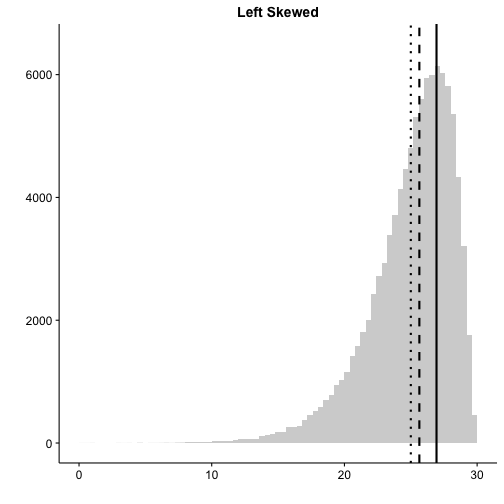
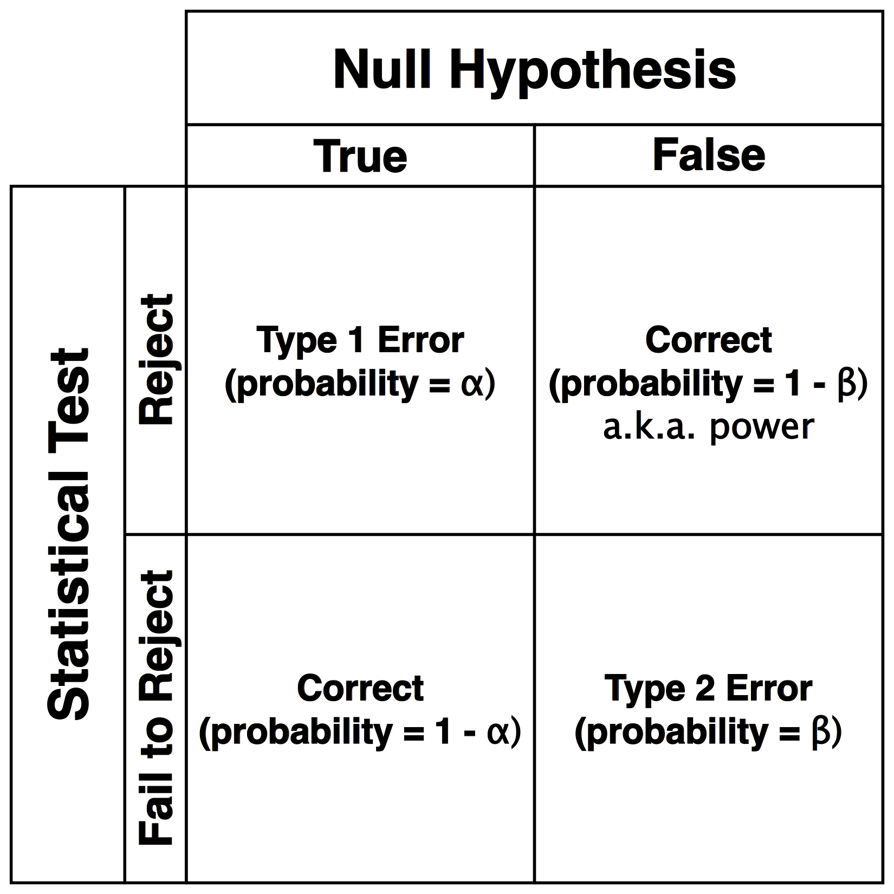
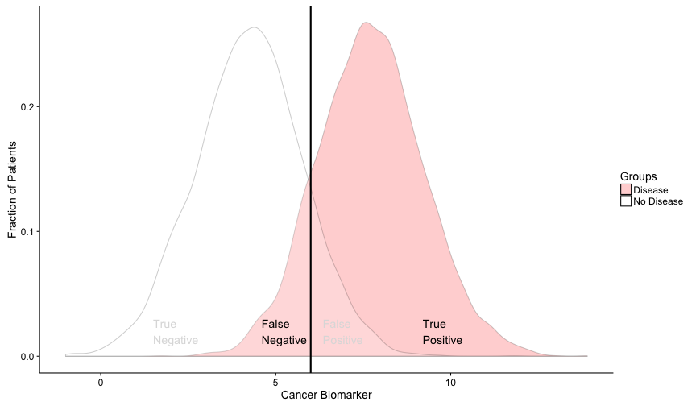
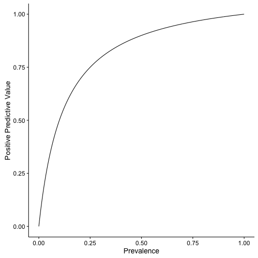
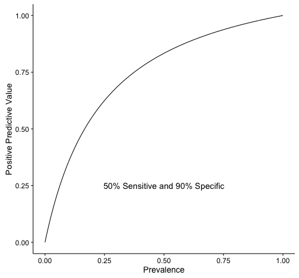
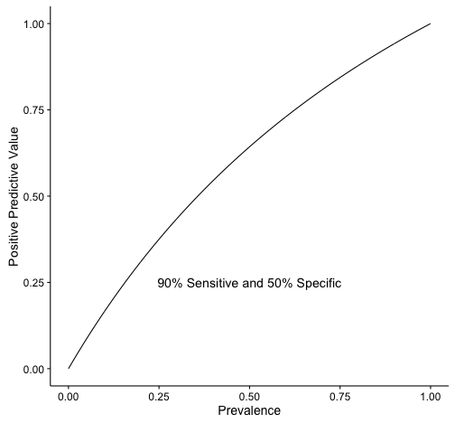
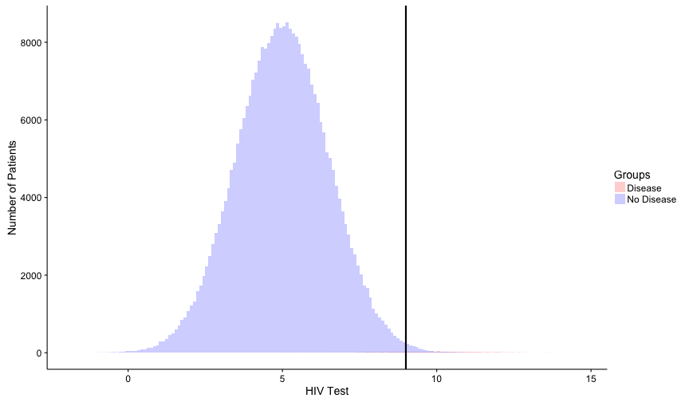

Validity and Reliability of Clinical Tests - 6 minutes
Measures of Risk - 10 minutes
Epidemiological Biases - 5 minutes
Types of Studies - 10 minutes
Biostatistics
There are some important random terms
Generalizability
How applicable is a finding to the general population
P-value
Probability of finding a value this extreme by random chance
Confidence Interval
Interval over which population value is found with a specified probability (e.g. 95%)
Efficacy
Performance of treatment under ideal circumstances
Effectiveness
Performance of treatment under real world circumstances
Precision is repeatability, Accuracy is closeness
Describing Distributions
Statistical distributions have invariant properties
Question #1
Investigators are studying prostate specific antigen (PSA) as a predictor for prostate cancer. To make the statistics easier, they are going to assume that PSA is a normally distributed population variable. Which of the following is correct under their assumption?
Mode is greater than median
Median is greater than mode
95% CI depends on degrees of freedom
Median is equal to mean
Mean is equal to standard deviation
The normal distribution is unimodal and symmetric.
The important invariant properties (for you) of normal distributions are the following:
Mean = Median = Mode
Unimodal
Symmetric
Area under curve is 1
Constant relationship between standard deviation and percentiles
Real distributions can have one or multiple peaks
Skew describes the direction of the tail

Question #2
Which of the following corresponds to the measures of central tendency on the graph from left to right?
mean, median, mode
mode, mean, median
median, mode, mean
mode, median, mean
mean, mode, median
Mode is most common, median is middle, mean is average value.
Always remember that the y-axis on these plots are counts or frequency. Therefore, which line is closest to the peak on the y-axis is the mode. The median is always in the middle. The mean is the most susceptible to outliers so in a skewed distribution it will always be farthest out on the tail.
Hypothesis Testing
The null hypothesis (\(H_0\)) is always the default
Assume:
There are two or more groups being compared, or
One group being compared to zero, or
One group is being compared to expectation.
For Step 1, probably safe to assume null is always rejected with \(p < 0.05\).
For ratios (e.g. Relative Risk, Odds Ratio), a 95% CI not overlapping 1 is significant.
For two sample tests, it is less straightforward how the CI relates to the p-value
Once \(H_0\) is rejected, we accept the alternative hypothesis \(H_A\).
T-test compares means of one or two groups
One sample: \(H_0\) = There is no difference between group mean and zero
Two sample: \(H_0\) = There is no difference between the disease and no disease groups
Paired: \(H_0\) = The difference of a measured variable between two time points on the same individuals is zero
Will the plot be significant?
T-test compares means of one or two groups
Two sample: \(H_0\) = There is no difference between the disease and no disease groups
Run the t-test
norm1 <- rnorm(5000, mean = 4.75, sd = 1.2)
norm2 <- rnorm(5000, mean = 5.25, sd = 1.2)
(t.test(norm1, norm2))$p.value
## [1] 1.505077e-95
Have we rejected the null hypothesis?
Yes, we have accepted \(H_A\). There is a difference between disease and no disease groups.
Chi-squared test uses categorical (count) data
Two common tests
Goodness-of-fit
Test of independence
Goodness-of-fit
\(H_0\): The number of cases occuring in a subgroup is consistent with expected
\(H_A\): The number of cases occuring in a subgroup is not consistent with expected
Test of independence
\(H_0\): Categorical variable A and categorical variable B are independent
\(H_A\): Categorical variable A and categorical variable B are not independent
Always expect a contingency table for chi-squared
Healthy
Disease
Total
Exposed
40
60
100
Not Exposed
500
400
900
Total
540
460
1000
Table 1: A 2x2 contingency table
Exposure Status
Never Sick
Sometimes Sick
Mostly Sick
Total
High
10
20
180
210
Medium
20
100
20
140
Low
100
40
10
150
Total
130
160
210
500
Table 2: A 3x3 contingency table
The contingency table can be of any size
Exposure Status
Never Sick
Infrequently Sick
Sometimes Sick
Mostly Sick
Always Sick
Total
Super High
10
90
34
12
12
158
Very High
30
345
54
43
21
493
High
70
57
67
65
32
291
Medium
200
33
87
25
42
387
Low
130
89
58
45
56
378
Very Low
100
54
36
23
78
291
Super Low
90
23
36
63
8
220
Total
530
691
372
276
249
2118
Table 3: A 7x5 contingency table
Pearson correlation compares two variables
The correlation can be positive or negative
For correlation, r is the critical statistic
Must be quantitative data
Not count data
\(r =\) correlation between variables
\(r^2 = \) amount of variance in y that is explained by x
p-value is still used for significance
For Step 1, most likely significant at \(p < 0.05\)
A wider spread in \(y\) means a lower \(r^2\)
Question #3
Clot
No Clot
Total
OCP Use
500
400
900
No OCP Use
80
20
100
Total
580
420
1000
A study was conducted to assess the association between oral contraceptive (OCP) use and confirmed blood clots. The data from the study are presented to the left. Which of the following is the best method to assess the association between OCP use and blood clots?
Two sample T-test
Analysis of variance
Pearson correlation
Chi-square test
Spearman correlation
What kind of data is this?
The only test available that utilizes categorical data is the Chi-square test. All of the other tests require at least rank or quantitative data.
Question #4
Investigators developed a new serum biomarker as a predictor for prostate cancer. To test it, they plan a cross-sectional study comprised of two groups. In one group, the researchers will include measurements of men with biopsy confirmed prostate cancer. In the other group, researchers will measure the level of their biomarker in men that have never previously been diagnosed with prostate cancer nor had a positive PSA test. The investigators will assume their biomarker is normally distributed. What is the best test to investigate whether the biomarker can distinguish the two groups?
Two sample Mann-Whitney U-test
Pearson correlation
Two sample T-test
Chi-squared test
Analysis of variance
The number of groups and distribution is all that matters
The two sample T-test is the appropriate test in this case. The two sample Mann-Whitney U-test could work as well, but is slightly less efficient for normally distributed data than the T-test. The Pearson correlation requires two measured variables on the same sample. A chi-squared test requires categorical (i.e. count) data. An analysis of variance is typically used to measure the difference in means of three or more groups.
Hypothesis testing has four possible outcomes

Correct - Reject a false \(H_0\)
Probability of success is called "power"
Power depends on sample size
bigger sample = bigger power
Correct - Fail to reject a true \(H_0\)
Probability determined by \(\alpha\) as \(1-\alpha\)
Type 1 - Incorrect rejection of a true \(H_0\)
False Positive
Type 2 - Failure to reject a false \(H_0\)
False Negative
Epidemiology
Types of prevention
Primary - Prevention
An action taken to prevent development of disease in a person who is well
Secondary - Screening
Identifying people in whom disease has begun but who do not have signs or symptoms
Tertiary - Treatment
Preventing complications in those who have developed signs and symptoms and have been diagnosed
Quaternary - Quit overtesting and overtreating
Recent effort to minimize excessive healthcare interventions in disease process
Endemic vs Sporadic vs Epidemic vs Pandemic
Statistic differences lie in setting and time frame
Attack rate
Typically used during epidemics/pandemics
Number of people who get disease / Number of people who are exposed
Incidence
Given a defined period of time
Number of people with disease / Number of people who are exposed
Prevalence
No time frame
Number of people with disease/Number of people who are exposed
For steady-state, simple diseases (e.g. SIR infections)
Prevalence = Incidence x Average Disease Duration
Tests are usually cutoffs on a continuous variable
Sensitivity is true positives / number with disease

Specificity is true negatives / number w/o disease
PPV and NPV vary based on pre-test probability

Positive Predictive Value
Chance that person has the disease after a positive test result
\(PPV = TP / (TP + FP)\)
Negative Predictive Value
Chance that person does not have disease after a negative test result
\(NPV = TN / (TN + FN)\)
Both depend on how prevalent the disease is in the population
PPV depends on sensitivity or specificity?
PPV ~ Specificity and NPV ~ Sensitivity


This is what real diseases look like in the population

This is the real prevalence of HIV... Where would you put the cutoff?
Question #5
Assume a steady-state population that is not changing in anyway. Which of the following statements is true for people who test positive regarding moving the cutoff for a positive test from the solid to the dotted line?
Decrease in test specificity
Increase in test sensitivity
Increase in PPV
Increase in NPV
Decrease in NPV
Question prefaces a positive test result
Incorrect - Moving the line to the right increases the specificity because it captures more true negatives as a portion of total negative individuals
Incorrect - Moving the line to the right decreases the sensitivity because it captures fewer true positives as a portion of total positive individuals
Correct - Moving the line to the right increase positive predictive value drives up the portion of true positives to total positive test by reducing the number of false positives
Incorrect - The question is concerned about positives tests which do not factor into negative predictive value
Incorrect - The question is concerned about positives tests which do not factor into negative predictive value
Odds and risk connect disease with exposure
Odds
Risk that someone with an exposure will get disease
Odds ratio (OR)
Excess odds of exposure of one population relative to another
Risk - Must know disease prevalence
Probability that someone with an exposure will get a disease
Risk Ratio (Relative Risk or RR)
Excess risk of one population relative to another
Both significant if CI does not include 1
Question #6
Investigators are studying the association between mesothelioma and asbestos exposure. Due to the relative rarity of the disease, they design a very large case-control study. In the end, they find an \(OR = 20 (19.54;20.52, p < 0.001)\). After assuming that the OR is a good approximation of risk, the authors conclude that the risk of mesothelioma is 20 times higher in those exposed to asbestos compared to control. Why is their assumption reasonable?
The incidence of mesothelioma in the population is low
The sample size of this study is very large
The result is highly significant
The OR is always a good approximation of outcome risk
The 95% CI is very narrow around the OR of 20
Think about the denominators for odds and risks.
Give an explanation
OR approximates RR in low prevalence diseases
Question #7
Two studies were conducted on different samples from the same population to assess the relationship between oral contraceptive use and the risk of deep venous thrombosis (DVT). Study A showed an increased risk of DVT among oral contraceptive users, with a relative risk of 2.0 and a 95% CI of 1.2-2.8. Study B showed a relative risk of 2.05 and a 95% CI of 0.8-3.1. Which of the following statements is most likely to be true regarding these 2 studies?
The p-value in study B is likely to be < 0.05
The result in study A is not accurate
The result in study A is not statistically significant
The result in study B is likely biased
The sample size is likely smaller in study B than study A
What gives a narrower confidence interval?
Incorrect - The CI in study B overlaps 1 so it is not significant
Incorrect - It is hard to judge accuracy without knowing the objective Truth
Inccorect - The CI in study A does not include 1 so it is statistically significant
Incorrect - There is no reason to believe B is biased
Correct - Per slide 23/38 bigger sample leads to improved ability to reject a false null hypothesis
Absolute risk reduction is a risk difference
Reminder
Exposed: \(Risk = A / (A + B)\)
Unexposed: \(Risk = C / (C + D)\)
\(AR = Risk_{Unexposed} - Risk_{Exposed}\)
\(ARR = Risk_{Control} - Risk_{Treatment}\)
Number needed to treat
Number of patients treated for ONE patient benefited
\(NNT = 1 / ARR\)
\(NNH = 1 / AR\)
Types of Biases - My groupings
Biases of design or unseen variables
Selection bias
Non-random partitioning of individuals into groups
Observer-expectancy
Observer is unblinded and expects a particular outcome
Hawthorne effect
Subjects improve health behaviors because someone is watching
Effect modification bias
Magnitude of effect varies by third variable
Can be eliminated by stratification
Confounding
Unseen third variable is an underlying cause for correlation of two other variables
Cannot be eliminated by stratification
Biases of information (measurement)
Recall bias
Subjects with disease can recall exposures better than healthy subjects
Procedure bias
Experimenters vary systematically in the way they do work
e.g. Experimenters don't follow the specified procedure
Instrument bias
Instrument is broken
Instruments can also be things like surveys or clerkship evaluations
Just means instrument is not reliable
Biases of time and completion
Lead-time bias
New test detects disease earlier
Survival appears improved with new test
Attrition bias
Subjects systematically withdraw
Could be things like side effects or lack of improvement
Loss-to-follow up
Subjects randomly do not report for scheduled followup
Types of studies
The pyramid of evidence is a hierarchy
Closer to the top means better evidence
Experimental Trials
Randomized control trial is in the name
Randomized control trials are the gold standard
This is widely considered the gold standard for clinical evidence
Question: Primary purpose of randomization?
Answer: To eliminate selection bias
Selection bias is eliminated if randomization is technically correct
Question: Secondary goal of randomization?
Answer: To control confounders
Confounders are not necessarily eliminated even with perfect technical execution
Can use relative risk because investigator knows prevalence of disease and prior exposures
Crossover trial means the two groups switch
This post hoc analysis is overly simplified for real life
This understanding is sufficient for step 1
Confounders reduced because a patient can serve as their own control
Observational Studies
Prospective cohorts follow groups into the future
Retrospective cohorts follow groups from the past
Cohorts form the next level of evidence
Can use relative risk because investigator knows prevalence of exposure and disease
Case-control trials measure chance of exposure given disease
Case-control forms the next level down from cohorts
Must use odds ratio because investigator does not know prevalence of disease
Subjects grouped by cases and controls
Measure odds of exposure in case and control groups
Use odds ratio as test statistic
Recall bias is the biggest problem
Investigator has infinite control over inclusion
Also common
Information biases
Cannot calculate incidence or prevalence
Cross-sectional trials measure exposure and disease simultaneously
Cross-sectional study form next level evidence
Quick, cheap, and easy
Typically this is a starting point
Can establish prevalence of disease
Must use chi-squared or correlation for statistical test
Subjects can be grouped by exposure and diease in to the 2x2 contingency
Cannot establish causation
Cannot calculate risk metrics
Question #8
A study was conducted to evaluate the efficacy of a new antiviral drug for the treatment of the common cold in young children. The study population consisted of 100 children between the age of 2 to 8 years. These children were diagnosed with rhinovirus infection and subsequently given the particular antiviral drug. One week later, it was observed that 92 of the 100 patient were asymptomatic. Which of the following is the true conclusion of this study?
The drug is highly effective as the effectiveness is 90%
The drug is moderately effective as the efficacy is 90%
An exact conclusion cannot be drawn from the study
The drug is not effective as the sample size is very small
No conclusion can be made, as compliance is generally very low in small children
A treatment is tested without a control
Incorrect - We can't compare to a real-world control.
Incorrect - We can't compare to an ideal control.
Correct - Most people with recover from a cold in a week or so.
Incorrect - The sample size may be adequate. There are no statistical tests to evaluate this statement.
Incorrect - Compliance would not be an issue in this case.
Question #9
A group of researchers are studying the relationship between mutations in HMG-CoA reductase and coronary heart disease (CHD). The study population is selected at random. Tissue samples are obtained for genotyping and stress echocardiograms are performed to assess CHD. In the subsequent paper, the authors conclude that there is an association between particular mutations in HMG-CoA reductase and CHD. Which of the following study designs did the authors utilize?
Retrospective cohort study
Cross-sectional study
Randomized clinical trial
Prospective cohort study
Case-control trial
What does the timeline look like?
Incorrect - A retrospective cohort starts at some point in the past. There is no indication of a past time or chart review in this study.
Correct - A cross-sectional study is a "snap shot". It simultaneously determines both risk factors and disease. It can establish an association, but it cannot say much about causation because the timeline is unknown.
Incorrect - Although patients are randomly selected, a random clinical trial requires a control group and requires some treatment under investigation.
Incorrect - A prospective cohort starts in the present and follows a group into the future. There is no indication of time or following patients or recording expsoure.
Incorrect - A case-control trial requires identifying cases with disease and controls without disease, then identifying exposures, and calculating the risk of exposure in given disease. There is no indication of that here.
Question #10
A study was conducted to evaluate the efficacy of a new antiviral drug for the treatment of the common cold in young children. The study population consisted of 100 children between the age of 2 to 8 years divided into control and treatment arms. These children were diagnosed with rhinovirus infection and subsequently given the particular antiviral drug. One week later, it was observed that 42 out of 50 treatment patients were asymptomatic and 30 of 50 control patients were asymptomatic. How many people need to be treated with this drug for one to reach the primary end point of this study?